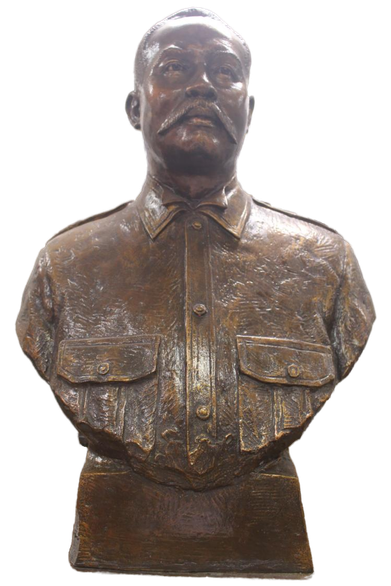
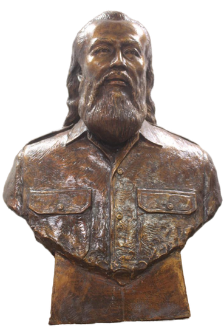
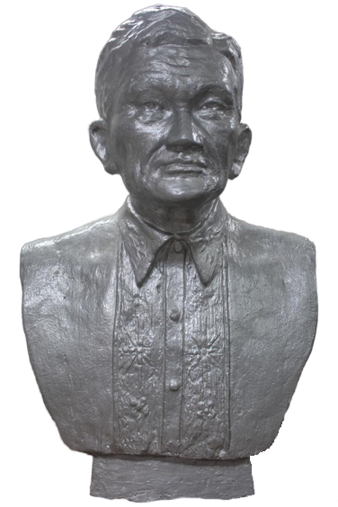

LOCAL HEROES

GEN. VICENTE LUKBAN Y RILLES
(1860-1916)
Gen. Vicente Lukban y Rilles was born on February 11, 1860, in Labo, Camarines Norte. He played a prominent role in the revolution against the Spanish colonial regime. Lukban organized the first-ever Katipunan chapter in Bicolandia, specifically in Camarines Norte, during the mid-1890s. He also established the province's first cooperative called La Cooperativa Popular, which fostered cooperation and contributed to the eventual overthrow of Spanish rule in the region.
In the late 1890s, Lukban joined Emilio Aguinaldo in exile in Hong Kong. Upon his return in 1898, he continued his revolutionary activities, both against the Spanish and later against the Americans. He embodied the revolutionary spirit of the people of Camarines Norte and played a direct role in shaping the nation's history. The national significance of his contributions cannot be overstated.
Every year on February 11, the province celebrates the Birth Anniversary of Gen. Vicente Lukban y Rilles in accordance with Executive Proclamation No. 1161 issued by former President Fidel V. Ramos on February 6, 1998.

LT. COL FRANCISCO DAMES BOAYES
Lt. Col. Francisco Dames Boayes, also known as "Turko" Boayes, was a Bicolano World War II hero and leader of the famous "Vinzons Command" in Camarines Norte. He was the eldest son of Ishmael Ayyash, a Syrian national of Jewish ancestry, who immigrated to the Philippines with his two businessmen cousins named Abraham and Bichara. His mother, Agapita Jimenez Dames of Daet, was a Filipino of Spanish mestiza descent.
After his father's death, Turko faced financial hardships and supported his sisters by taking on various odd jobs. One of his jobs was working as a baggage boy in the market, which helped him develop physical strength, stamina, and endurance, becoming valuable assets later in life.
Turko was closely associated with the late Gov. Wenceslao Q Vinzons, serving as his aide, chauffeur, and bodyguard. Together, they fought against the Japanese Imperial Occupation forces in Camarines Norte from December 19, 1941, to July 8, 1942. When Lt. Vinzons was captured and executed by the Japanese in July 1942, Turko took command of the guerilla unit, reorganized it, and led several successful raids against enemy garrisons. One of his notable acts of bravery was an attack that liberated 30 American and Filipino prisoners who were about to be executed in Naga.
Due to his exceptional leadership and valor, Turko rose through the ranks and eventually became a Colonel. His contributions and heroism were officially recognized on June 13, 1968, during a ceremony in Camp Aguinaldo. He was awarded the Gold Medal, the highest honor for a World War II war veteran, personally conferred by then President Ferdinand E. Marcos. This recognition marked the crowning glory of his bravery and acknowledged his status as a true hero.

CAPT. TOMAS M. ZALDUA
(1808-1898)
He was a former Capitan Municipal (Mayor) of Daet during the Spanish era and the father of Telesforo (Teniente Mayor) and Marianito (Teniente Sindico). The Zalduas came from a wealthy family and some of them attended the seminary of Nueva Caceres in Naga. Capt. Tomas, Telesforo, and Marianito were among the martyrs of the 1898 Daet Revolt.
The Katipunan in the province experienced rapid growth in 1897 due to Spanish abuses and the Bicolanos' sympathy for the revolution's aim of achieving freedom. On April 16, 1898, the Katipuneros gained control of Daet, surrounding the Arana house where all the Spaniards sought refuge. The Katipuneros also occupied the Court of First Instance building near the southern end of the old Spanish bridge, freeing prisoners and imprisoning the warden.
At the critical moment, 25 civil guards led by Capt. Abreau and another Spanish officer arrived aboard the steamboat Serrantes to aid the besieged Spaniards at the Arana residence. Additionally, 150 troops led by Sgt. Pegerto Lopez and Sgt. Narciso arrived as reinforcement.
On April 18, 1898, when the Spaniards regained control of Daet, suspected leaders and members of the Katipunan were summarily arrested. Capt. Zaldua was among those tortured and killed.
The Daet Revolt ended in a complete defeat for the Filipinos. However, it marked the first wave of revolutionary uprising that spread throughout the entire Bicol region. On August 12, 1898, the Spanish forces abandoned Camarines Norte upon learning about the advancing forces of Gen. Vicente Lukban.